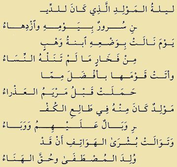
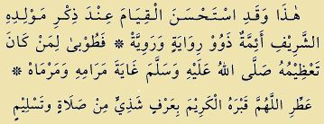

Sayyid Ja’far Bin Husain Bin Abdul Karim Al-Barzanji
Sayyid Ja’far ibn Hasan ibn Abdul Karim ibn Muhammad ibn Sayid Rasul ibn Abdul Syed ibn Abdul Rasul ibn Qalandar ibn Abdul Syed ibn Isa ibn Husain ibn Bayazid ibn Abdul Karim ibn Isa ibn Ali ibn Yusuf ibn Mansur ibn Abdul Aziz ibn Abdullah ibn Ismail ibn Al-Imam Musa Al-Kazim ibn Al-Imam Ja’far As-Sodiq ibn Al-Imam Muhammad Al-Baqir ibn Al-Imam Zainal Abidin ibn Al-Imam Husain ibn Sayidina Ali r.a. dan Sayidatina Fatimah binti Rasulullah saw.
Dinamakan Al-Barjanzy karena dinisbahkan kepada nama desa pengarang yang terletak di Barjanziyah kawasan Akrad (kurdistan). Kitab tersebut nama aslinya ‘Iqd al-Jawahir (Bahasa Arab, artinya kalung permata) sebagian ulama menyatakan bahwa nama karangannya adalah “I’qdul Jawhar fi mawlid anNabiyyil Azhar”. yang disusun untuk meningkatkan kecintaan kepada Nabi Muhammad saw, meskipun kemudian lebih terkenal dengan nama penulisnya.
Beliau dilahirkan di Madinah Al Munawwarah pada hari Kamis, awal bulan Zulhijjah tahun 1126 H (1711 M). Beliau menghafal Al-Quran 30 Juz kepada Syaikh Ismail Alyamany dan Tashih Quran (mujawwad) kepada syaikh Yusuf Asho’idy kemudian belajar ilmu naqliyah (quran Dan Haditz) dan ‘Aqliyah kepada ulama-ulama masjid nabawi Madinah Al Munawwarah dan tokoh-tokoh qabilah daerah Barjanzi kemudian belajar ilmu nahwu, sharaf, mantiq, Ma’ani, Badi’, Faraidh, Khat, hisab, fiqih, ushul fiqh, falsafah, ilmu hikmah, ilmu teknik, lughah, ilmu mustalah hadis, tafsir, hadis, ilmu hukum, Sirah Nabawi, ilmu sejarah semua itu dipelajari selama beliau ikut duduk belajar bersama ulama-ulama masjid nabawi. Dan ketika umurnya mencapai 31 tahun atau bertepatan 1159 H barulah beliau menjadi seorang yang ‘Alim wal ‘Allaamah dan Ulama besar.
Maulid Al-Barzanji Oleh: Sayyid Ja’far Bin Husain Bin Abdul Karim Al-Barzanji
Aku mulai membacakan dengan nama Dzat Yang Mahatinggi.
Dengan memohon limpahan keberkahan atas apa yang Allah berikan dan karuniakan kepadanya (Nabi Muhammad Shallallahu’alayhi wasallam).
Aku memuji dengan pujian yang sumbernya selalu membuatku menikmati.
Dengan mengendarai rasa syukur yang indah.
Aku pohonkan shalawat dan salam (rahmat dan kesejahteraan) atas cahaya yang disifati dengan kedahuluan (atas makhluk lain) dan keawalan (atas seluruh makhluk). Yang berpindah-pindah pada orang-orang yang mulia.
Aku memohon kepada Allah karunia keridhaan yang khusus bagi keluarga beliau yang suci. Dan umumnya bagi para sahabat, para pengikut, dan orang yang dicintainya.
Dan aku meminta tolong kepada-Nya agar mendapat petunjuk untuk menempuh jalan yang jelas dan terang. Dan terpelihara dari kesesatan di tempat-tempat dan jalan-jalan kesalahan.
Aku sebar luaskan kain yang baik lagi indah tentang kisah kelahiran Nabi Shollallahu’alayhi wa sallam.
Dengan merangkai puisi mengenai keturunan yang mulia sebagai kalung yang membuat telinga terhias dengannya.
Dan aku minta tolong dengan daya Allah Ta‘ala dan kekuatan-Nya yang kuat. Karena, sesungguhnya tidak ada daya dan kekuatan kecuali dengan pertolongan Allah.
Setelah itu aku berkata: Dia adalah junjungan kita, Nabi Muhammad bin Abdullah bin Abdil Muththalib.
Namanya (nama Abdul Muthalib) adalah Syaibatul Hamdi, dan perilaku-perilakunya yang luhur itu terpuji. Ia putra Hasyim, yang nama sebenarnya ‘Amr, putra Abdi Manaf, yang nama sebenarnya Mughirah, yang keluhuran itu dicitrakan kepadanya karena kemuliaan nasabnya.
Ia putra Qushay, yang nama sebenarnya Mujammi’.
Disebut Qushaiy karena jauhnya (ia pergi) ke negeri Qudha‘ah yang jauh. Sampai Allah Ta‘ala mengembalikannya ke tanah haram (suci) dan terhormat, lalu Dia memeliharanya dengan suatu pemeliharaan yang sesungguhnya.
Ia putra Kilab, nama sebenarnya Hakim, putra Murrah, putra Ka‘ab, putra Luayy, putra Gholib, putra Fihr, yang nama sebenarnya Quraisy.
Dan kepadanya dinasabkan semua suku Quraisy. Orang yang di atasnya adalah dari Kabilah Kinanah, sebagaimana pendapat banyak orang.
Ia (Fihr) adalah putra Malik, putra Nadhr, putra Kinanah, putra Khuzaimah, putra Mudrikah, putra Ilyas. Dan Ilyas ini adalah orang pertama yang mengorbankan unta ke tanah haram (BaitulHaram). Dan di tulang punggungnya, terdengar Nabi SAW menyebut dan memenuhi panggilan Allah Ta‘ala.
Ia (Ilyas) adalah putra Mudhar bin Nizar bin Ma‘ad bin Adnan.
Inilah kalung yang butiran-butiran mutiaranya terangkai oleh sunnah yang tinggi. Untuk menyebutkan orang-orang di atasnya (di atas Adnan) sampai kepada Al-Khalil, Nabi Ibrahim, Syari‘ (yakni Nabi) menahan dan enggan menyebutnya.
Dan tidak diragukan lagi, menurut orang-orang yang memiliki ilmu nasab, nasab Adnan sampai kepada Dzabih (orang yang akan disembelih), yakni Ismail.
Alangkah agungnya nasab itu dari untaian permata yang bintangnya gemerlapan. Bagaimana tidak,
sedangkan tuan yang paling mulia (Nabi Muhammad Shollallahu’alayhi wasallam) adalah pusatnya yang terpilih. Itulah nasab yang diyakini ketinggiannya karena kebersihannya.
Bintang Jauza‘ (Aries) telah merangkai bintang-bintangnya.
Alangkah indahnya untaian kesempurnaan dan kemegahan, sedangkan engkau padanya merupakan permata tunggal yang terpelihara.
Alangkah mulianya keturunan yang disucikan oleh Allah Ta‘ala dari perzinaan Jahiliyyah.
Zain Al-Iraqi menuturkan dan meriwayatkannya di dalam karangannya yang bagus.
Tuhan memelihara nenek moyangnya yang mulia (dari perbuatan nista) karena memuliakan Muhammad, yaitu untuk menjaga namanya. Mereka meninggalkan perzinaan, maka cacat perzinaan itu tidak menimpa mereka, dari Adam sampai ayah-ibu beliau. Mereka adalah para pemimpin yang cahaya kenabian berjalan di garis-garis dahi mereka yang cemerlang. Dan jelaslah cahayanya (Nabi Muhammad) di dahi datuknya,
Abdul Muththalib, dan anaknya, Abdullah.
Ketika Allah Ta‘ala menghendaki untuk menampakkan hakikatnya yang terpuji, dan memunculkannya
sebagai jasmani dan ruhani dalam bentuk dan pengertiannya, Dia memindahkannya ke tempat menetapnya
di kandungan Aminah Az-Zuhriyyah, dan Dzat Yang Mahadekat dan Maha Memperkenankan,
mengkhususkannya (Aminah) menjadi ibu makhluk pilihan-Nya.
Diserukan di langit dan di bumi bahwa ia (Aminah) mengandungnya.
Dan berembuslah angin sepoi-sepoi basah di pagi hari. Setelah lama gersang,
bumi dipakaikan sutra tebal dari tumbuh-tumbuhan. Buah buah menjadi masak, dan pohon-pohon mendekati orang yang akan memetiknya.
Setiap binatang suku Quraisy mengucapkan dengan bahasa Arab yang fasih bahwa beliau sedang dikandung.
Singgasana-singgasana raja dan berhala menjadi tersungkur pada muka dan mulutnya.
Binatang-binatang liar bumi Timur dan Barat serta binatang laut saling bertemu.
Seluruh alam merasakan kesenangan.
Jin memberitakan dekatnya masanya (masa kelahiran beliau), sedangkan juru tenung menjadi binasa
dan para pendeta menjadi takut.
Setiap orang pandai dan waspada, membicarakan beritanya dan himpunan kebaikannya yang membingungkan (alam).
Ibunya di dalam tidur (mimpi) didatangi dan dikatakan kepadanya, “Sesungguhnya kamu mengandung
pemimpin seluruh alam dan sebaik-baik manusia.
Apabila kamu melahirkannya, namailah ia Muhammad (artinya orang yang terpuji), karena ia akan dipuji.”
Ketika genap beliau dikandung dua bulan menurut pendapat yang diriwayatkan dan termasyhur,
ayahnya, Abdullah, wafat di Madinah Al-Munawwarah.
Ia ketika itu telah singgah pada paman-pamannya dari Bani ‘Adiy yang termasuk kelompok Najjar.
Ia tinggal di tempat mereka selama satu bulan karena sakit parah.
Ketika genap beliau dikandung sembilan bulan Qamariyah menurut pendapat yang kuat, datanglah masa hilangnya haus.
Pada malam kelahirannya,Asiyah dan Maryam datang kepada ibunya bersama
sekelompok perempuan dari Hadhiratul Qudsiyyah.
Lalu Aminah merasakan sakitnya orang yang mau melahirkan, kemudian ia melahirkan beliau dengan cahayanya yang cemerlang.
Wajahmu bagaikan matahari yang menyinari, yang karenanya malam menjadi terang benderang.
Malam kelahiran beliau membawa kegembiraan dan kemegahan bagi agama, tetapi dalam pandangan orang-orang kafir tidak disukai dan merupakan wabah atas mereka.
Yaitu, saat putri Wahab memperoleh kemegahan dengan melahirkannya yang tidak diperoleh wanita-wanita lain.
Aminah membawa kepada kaumnya, orang yang lebih utama daripada yang dikandung sebelumnya
oleh Maryam yang perawan.
Terus-menerus kabar gembira memberitakan bahwa insan pilihan telah dilahirkan dan benarlah kegembiraan itu.
Demikianlah, para imam yang memiliki riwayat dan pemikiran, memandang baik untuk berdiri ketika menyebutkan kelahirannya yang mulia.
Maka kebaikanlah yang didapatkan orang yang penghormatannya terhadap Nabi SAW sampai ke puncak harapan dan tujuan.
Artinya


Artinya
Beliau lahir dengan meletakkan kedua tangannya di atas tanah dengan mengangkat kepalanya ke langit yang tinggi. Dengan mengangkatnya itu beliau mengisyaratkan kepemimpinannya (atas makhluk) dan ketinggian (akhlaq)-nya.
Beliau juga mengisyaratkan ketinggian derajatnya atas seluruh manusia.
Dan sesungguhnya beliau adalah orang yang dicintai dan baik naluri dan perangainya.
Ibunya memanggil Abdul Muththalib yang ketika itu sedang thawaf pada bangunan itu (Ka‘bah).
Lalu ia datang segera dan memandangnya, dan ia memperoleh kegembiraan yang dicita-citakannya.
Abdul Muththalib lalu memasukkannya ke Ka‘bah yang cemerlang dan mulai berdoa dengan niat yang tulus (ikhlas).
Ia bersyukur kepada Allah Ta‘ala atas apa yang telah dianugerahkan dan diberikan kepadanya.
Beliau dilahirkan dalam keadaan bersih, telah dikhitan, dan dipotong pusatnya dengan tangan (kekuasaan) Tuhannya.
Harum, berminyak rambut, dan sepasang matanya telah bercelak dengan celak dari Tuhan. Dan ada pendapat yang mengatakan,kakeknya mengkhitankannya setelah tujuh malam. Ia selenggarakan walimah, memberi makan orang,
dan memberi nama kepadanya Muhammad dan ia muliakan kedudukannya.
Ketika beliau lahir, tampaklah beberapa hal yang luar biasa dan hal-hal ghaib yang asing sebagai irhash (hal-hal luar biasa yang Allah berikan kepada seorang nabi dan rasul sebelum diangkat) bagi kenabiannya dan pemberitahuan bahwa beliau adalah orang yang dipilih oleh Allah Ta‘ala.
Langit ditambah penjagaannya dan ditolak darinya (dari langit) para jin dan setan.
Bintang-bintang yang bersinar itu merajam setiap setan yang naik.
Bintang-bintang yang cemerlang menunduk kepada beliau.
Lembah dan bukit di Makkah tersinari dengan cahayanya. Bersama beliau keluarlah cahaya yang
menerangi istana-istana kaisar di Syam (Syiria).
Maka orang yang rumah dan tempat tinggalnya di Makkah melihatnya.
Dan menjadi retak istana kaisar di Madain yang bangunannya ditinggikan dan dibangun oleh Anusyarwan. Empat belas menara yang tinggi roboh.
Kerajaan Kisra binasa karena terkejut dengan apa yang menimpanya dan sampai kepadanya.
Padam pula api yang disembah di Kerajaan Persi karena munculnya cahaya yang menerangi dan sinar wajahnya.
Dan surutlah Danau Sawah yang terletak di antara Hamadzan dan Qum di negeri ‘Ajam (negeri non-Arab), keringlah sumber-sumber air itu pada waktu tercegahnya tetesan yang banyak mengalir.
Dan meluaplah Lembah Samawah, dan itu menjadi keberuntungan terhadap tanah dan padang pasir. Sebelumnya di tempat itu tidak ada air untuk orang yang haus tenggorokannya.
Kelahiran beliau adalah di tempat yang dikenal dengan Irash di Makkah.
Dan negeri yang pohonnya tidak ditebang dan pohon-pohon perdunya tidak dipotong.
Ada perbedaan pendapat mengenai tahun kelahirannya, bulan dan harinya. Tetapi pendapat yang kuat menyebutkan, kelahiran itu menjelang fajar hari Senin tanggal dua belas bulan Rabi‘ul Awwal tahun Gajah, kala itu Allah mencegah gajah untuk sampai ke Ka‘bah dan Dia menjaganya.
Ibunya menyusuinya beberapa hari, kemudian beliau disusui oleh Tsuwaibah Al-Aslamiyah.
Ia perempuan yang telah dimerdekakan oleh Abu Lahab ketika ia datang kepadanya memberitahukan kabar
gembira kelahiran beliau. Tsuwaibah menyusui beliau bersama dengan anak laki-lakinya, Masruh dan Abu Salamah, dan ia memuliakan dan sayang kepada beliau.
Sebelumnya ia menyusui Hamzah, yang amalnya terpuji dalam menolong agama Islam.
Beliau mengirim kepadanya (kepada Tsuwaibah,yakni setelah beliau dewasa) belanja dan pakaian dari Madinah yang layak untuknya, sampai kematian datang kepadanya dan kubur menutupinya.
Ada pendapat yang mengatakan, ia tetap mengikuti agama kaumnya, orang-orang Jahiliyyah.
Tapi ada pula yang mengatakan, ia masuk Islam.
Ibnu Mundah menyebutkan adanya perbedaan pendapat itu.
Kemudian beliau disusui oleh Halimah As-Sa‘diyah.
Dulunya setiap kaum menolak dan enggan menyusukan bayinya kepadanya karena miskinnya. Lalu kehidupannya menjadi lebih baik setelah sempit malam sebelumnya (artinya, dalam waktu sekejap setelah menyusui beliau, keadaannya sangat berubah).
Susunya penuh dengan air susu. Bagian kanan payudaranya untuk menyusui Nabi Muhammad, dan
susu yang lain untuk menyusui saudaranya (saudara sepersusuan).
Maka Halimah menjadi kaya setelah sebelumnya kurus dan miskin.
Unta dan kambingnya yang kurus menjadi gemuk. Dan hilanglah semua bencana dan musibah darinya. Kebahagiaan menyulam kerudung kehidupannya.
Beliau tumbuh dalam sehari seperti pertumbuhan anak kecil dalam sebulan dengan perhatian Tuhan.
Beliau telah berdiri di atas kedua telapak kakinya pada usia tiga bulan, berjalan pada usia lima bulan,
dan kekuatannya telah kuat pada usia Sembilan bulan, dan fasih ucapannya.
Lalu malaikat membelah dadanya yang mulia ketika beliau tinggal dengan Halimah.
Kedua malaikat itu mengeluarkan gumpalan darah dari dada itu.
Keduanya menghilangkan bagian setan (bagian yang dapat dimasuki setan) dan keduanya mencucinya dengan salju, lalu memenuhinya dengan hikmah dan makna-makna keimanan.
Kemudian keduanya menjahitnya kembali dan mengecapnya dengan cap kenabian.
Setelah itu mereka menimbangnya.
Ternyata beliau mengungguli seribu orang dari umatnya, umat pilihan.
Beliau tumbuh dengan sifat-sifat yang paling sempurna sejak kanak-kanaknya.
Kemudian Halimah mengembalikannya kepada ibunya meskipun merasa berat dengan pengembalian itu. Itu ia lakukan karena takut beliau mengalami malapetaka yang dikhawatirkannya.
Halimah datang kepada beliau pada hari-hari setelah beliau menikah dengan Khadijah, seorang nyonya yang baik (budi dan rupanya).
Lalu ia menerima pemberian yang banyak dari beliau.
Halimah juga datang kepada beliau pada Perang Hunain, lalu beliau bangun menemuinya, dan ia pun memperoleh pemberian yang banyak.
Beliau bentangkan kebajikan dan kedermawanan untuknya dari selendangnya yang mulia.
Menurut pendapat yang shahih, Halimah telah masuk Islam bersama suaminya dan anak-cucunya.
Dan sekelompok perawi terpercaya memasukkan keduanya ke dalam golongan sahabat.
Ketika beliau mencapai usia empat tahun, ibunya berangkat dengannya ke Madinah.
Kemudian ia kembali lalu wafat di Abwa’ atau Syi‘bul Hajun.
Lalu beliau dibawa oleh pengasuhnya, Ummu Aiman Al-Habasyiah, yang nantinya beliau nikahkan dengan Zaid bin Haritsah, maula (bekas budak) beliau.
Ummu Aiman memasukkan beliau ke tempat kakeknya, Abdul Muthalib.
Maka Abdul Muthalib memeluknya dan ia sangat sayang kepadanya.
Lalu ia berkata, “Sesungguhnya anakku (cucuku) ini mempunyai kedudukan yang sangat tinggi, maka beruntunglah orang yang menghormati dan memuliakannya.”
Beliau, yang enggan mengadu, tidak pernah mengadu lapar dan haus di waktu kanak-kanak.
Sering kali beliau pergi di waktu pagi lalu beliau minum (sebagai pengganti makan) air zamzam,
sehingga membuatnya kenyang dan segar.
Ketika kematian menjemput kakeknya, Abdul Muthalib, pamannya, saudara kandung ayahnya, Abu Thalib, menanggungnya, dengan memeliharanya.
Ia melaksanakan penanggungan itu dengan kemauan keras dan penuh semangat.
Abu Thalib mendahulukan beliau dibandingkan dirinya dan anak-anaknya, dan ia juga mendidiknya.
Saat beliau mencapai umur dua belas tahun, pamannya membawanya pergi ke negeri Syam.
Pendeta Buhaira mengenalnya karena sifat kenabian yang ada pada diri beliau. Dan ia berkata, “Aku yakin, beliau adalah pemimpin seluruh alam, utusan Allah, dan nabi-Nya.
Pohon dan batu sujud kepadanya, padahal keduanya tidak sujud kecuali kepada nabi yang selalu kembali kepada Allah.
Sesungguhnya kami mendapati sifatnya di dalam kitab samawi yang terdahulu.” Di antara kedua bahunya terdapat cap kenabian yang telah diratai oleh cahaya.
Pendeta itu menyuruh pamannya untuk mengembalikannya ke Makkah, karena mengkhawatirkan beliau dari perlakuan para pemeluk agama Yahudi.
Maka Abu Thalib membawa pulang beliau dari Syam yang suci tidak melalui Bashrah.
Ketika mencapai usia dua puluh lima tahun, beliau berpergian ke Bashrah untuk memperdagangkan barang-barang Khadijah, seorang wanita yang tertutup (karena selalu di rumah).
Beliau ditemani budak laki-laki Khadijah, Maisarah, untuk membantu beliau.
Dalam perjalanan, beliau singgah di bawah pohon di depan biara Nastura, seorang pendeta Nasrani.
Pendeta itu mengenalnya karena bayangan pohon condong kepadanya dan melindunginya.
Sang pendeta berkata, “Tidaklah singgah di pohon ini kecuali seorang nabi yang mempunyai sifat yang
bersih dan seorang rasul (utusan) yang telah dikhususkan dan diberi keutamaan oleh Allah Ta`ala.”
Kemudian pendeta itu berkata kepada Maisarah, “Apakah pada kedua matanya terdapat tanda kemerah-merahan yang menunjukkan tanda yang tersembunyi (samar)?”
Maisarah menjawab, “Ya.”
Maka benarlah apa yang diduga dan dimaksudkan oleh pendeta itu tentang beliau.
Pendeta itu lalu berkata kepada Maisarah, “Janganlah kamu berpisah darinya, dan bersamanyalah kamu dengan niat yang benar dan maksud yang baik, karena ia termasuk orang yang dimuliakan dan dipilih oleh Allah Ta`ala dengan kenabian!”
Kemudian beliau pun kembali ke Makkah.
Khadijah, yang sedang bersama perempuan-perempuan lain di dalam kamar, melihatnya datang.
Dua malaikat telah menaungi kepalanya yang mulia dari teriknya matahari.
Maisarah memberitahukan kepada Khadijah bahwasanya ia pun melihat hal itu dalam seluruh perjalanannya.
Ia juga memberitahukan apa yang dikatakan oleh pendeta itu dan pesan yang disampaikannya.
Allah melipatgandakan keuntungan dalam perdagangan itu dan mengembangkannya.
Jelaslah bagi Khadijah mengenai apa yang telah dilihat dan didengarnya bahwa beliau adalah utusan Allah Ta‘ala kepada manusia, yang telah ditentukan oleh Allah Ta‘ala dekat kepada-Nya dan dipilih-Nya.
Maka Khadijah meminangnya untuk dirinya agar ia dapat menghirup harum-haruman yang menyegarkan dari keimanan kepadanya.
Lalu beliau memberitahukan kepada paman-pamannya mengenai apa yang disampaikan oleh wanita yang baik dan taqwa itu.
Mereka senang kepada Khadijah karena keutamaan, agama, kecantikan, harta benda, kebangsawanan, dan asal keturunannya.
Masing-masing orang dari kaum itu menginginkannya.
Abu Thalib meminang dan memujinya setelah memuji Allah dengan pujian yang tinggi. Dan ia mengatakan, “Dia (Muhammad), demi Allah, mempunyai berita yang besar yang perjalanannya itu terpuji.”
Lalu ayah Khadijah mengawinkan dengan beliau.
Tapi ada yang mengatakan pamannya, ada pula yang mengatakan saudaranya. Kebahagiaannya yang azali telah ditentukan.
Dan ia melahirkan semua putra-putri Nabi SAW, kecuali putra beliau yang beliau namakan Ibrahim.
Ketika beliau mencapai umur tiga puluh lima tahun, suku Quraisy membangun kembali Ka‘bah karena keretakan dindingnya disebabkan oleh banjir Makkah.
Mereka bersengketa mengenai pengangkatan Hajar Aswad.
Masing-masing berharap mengangkatnya.
Besarlah pembicaraan dan omongan mereka,dan mereka saling bersumpah untuk berperang karena kuatnya kefanatikan itu.
Kemudian mereka saling mengajak untuk insaf dan menyerahkan urusan mereka kepada orang yang mempunyai pendapat yang benar dan halus.
Mereka memutuskan, hal itu diserahkan kepada orang yang pertama masuk dari pintu Sadanah Syaibiyah.
Ternyata Nabi SAW yang pertama kali masuk.
Maka mereka mengatakan, “Ini orang yang terpercaya.
Kami semua menerima dan meridhainya.”
Maka mereka memberitakan bahwa mereka ridha kepadanya untuk menjadi pengambil keputusan dalam hal yang mendesak ini.
Lalu beliau meletakkan Hajar Aswad itu di selembar kain,
kemudian beliau memerintahkan semua kabilah untuk mengangkatnya.
Lalu mereka mengangkat ke tempatnya pada sendi bangunan itu.
Beliau meletakkannya dengan tangannya yang mulia di tempatnya.
Ketika genap empat puluh tahun usia beliau,
menurut pendapat yang paling diterima oleh orang-orang yang memiliki ilmu, Allah Ta‘ala mengutusnya sebagai pembawa kabar gembira dan pemberi peringatan kapada seluruh alam.
Lalu beliau meratai mereka dengan rahmat.
Itu dimulai dengan mimpi yang baik dan jelas sampai sempurna enam bulan. Beliau hanya melihat ada seperti sinar subuh datang memancarkan sinarnya.
Dimulainya impian itu sebagai latihan bagi kekuatan manusia agar tidak terkejut dengan kehadiran malaikat yang mengabarkan kenabiannya sehingga beliau tidak kuat.
Beliau disenangkan untuk bersunyi diri.
Beliau beribadah di Gua Hira selama beberapa malam,
sampai datang kebenaran yang jelas dan sempurna kepadanya.
Itu terjadi pada hari Senin tanggal tujuh belas, bulan yang mengandung Lailatul Qadr (bulanRamadhan).
Terdapat perbedaan pendapat mengenai itu.
Yaitu dua puluh tujuh, dua puluh empat, atau
dua puluh delapan, bulan kelahirannya, yang padanya muncul wajah yang bagaikan bulan purnama (bulan Rabi‘ul Awwal).
Kemudian malaikat berkata kepadanya, “Bacalah!”
Beliau mengatakan, “Aku tidak dapat membaca.”
Maka malaikat mendekapnya kuat-kuat dan berkata lagi kepadanya, “Bacalah!”
Beliau tetap mengatakan, “Aku tidak dapat membaca.”
Malaikat mendekapnya untuk kedua kalinya sehingga beliau kepayahan, dan berkata lagi kepadanya,
“Bacalah!”
Beliau tetap mengatakan, “Aku tidak dapat membaca.”
Maka malaikat mendekapnya ketiga kalinya agar beliau menghadap kepada apa yang akan disampaikan kepadanya dengan tekad bulat.
Beliau menghadap dan menerima dengan sungguh-sungguh.
Kemudian wahyu terputus selama tiga tahun atau tiga puluh bulan, agar beliau rindu kepada embusan-embusan yang harum.
Lalu diturunkan kepada beliau surah Al-Muddatstsir.
Kemudian Jibril datang kepadanya dan memanggilnya.
Bagi kenabiannya, didahulukannya ucapan Iqra’ bismi rabbika (Bacalah dengan nama Tuhanmu) merupakan bukti bahwa surah itu adalah yang terdahulu dan kedahuluan atas risalahnya dengan kabar gembira bagi orang yang diserunya.
Orang yang pertama beriman kepadanya dari kalangan laki-laki dewasa adalah Abu Bakar, teman di dalam gua dan orang yang membenarkannya.
Dari kalangan remaja adalah Ali.
Dari kalangan wanita adalah Khadijah, yang telah diteguhkan dan dijaga hatinya oleh Allah.
Dari kalangan bekas budak adalah Zaid bin Haritsah.
Dan dari kalangan hamba sahaya adalah Bilal, yang disiksa Umayah karena ia beriman kepada Allah.
Dan tuannya yang kemudian,yaitu Abu Bakar Ash-Shiddiq, memberinya kenikmatan berupa kebebasan.
Kemudian masuk Islam pulalah Utsman, Sa‘d, Sa‘id, Thalhah, Ibnu Auf (Abdurrahman), dan putra bibinya,Shafiyah.
Dan orang lain yang diberi minum oleh Ash-Shiddiq yang bagaikan jernihnya khamr pembenaran.
Ibadah beliau dan para sahabatnya terus berlangsung tersembunyi.
Sampai diturunkan kepada beliau “Fashda‘ bima tu’mar” (Maka sampaikanlah olehmu secara terang-terangan apa yang diperintahkan kepadamu).
Oleh karena itu, beliau terang-terangan menyeru makhluk kepada Allah.
Dan kaumnya tidak menjauhinya sehingga beliau mencela berhala mereka dan beliau memerintahkan untuk menolak selain Tuhan, Yang Maha Esa.
Maka mereka berani memusuhi dan menyakiti beliau.
Beratlah cobaan atas muslimin, sehingga mereka pada tahun kelima (dari kenabian) hijrah ke Najasyiyah (Ethiopia).
Namun pamannya, Abu Thalib, sangat menyayanginya. Maka masing-masing orang dari kaum itu takut dan menjaganya.
Diwajibkan atasnya melakukan ibadah di sebagian waktu malam. Kemudian dinasakh dengan firman-Nya (yang artinya), “Maka bacalah apa yang mudah (bagimu) dari Al-Quran dan dirikanlah shalat.”
Dan difardhukan atasnya dua rakaat di pagi hari dan dua rakaat di sore hari. Kemudian dinasakh dengan
diwajibkannya shalat lima waktu pada malam Isranya.
Abu Thalib meninggal dunia pada pertengahan bulan Syawwal tahun kesepuluh dari kenabian.
Karena kematiannya itu, makin besarlah musibah itu baginya.
Tiga hari kemudian Khadijah menyusulnya, maka sangat kuatlah cobaan atas kaum muslimin, seperti kencangnya ikat pinggang.
Suku Quraisy menimpakan kepada beliau setiap hal yang menyakitkan.
Lalu beliau pergi ke Thaif, mengajak Tsaqif (Bani Tsaqif), namun mereka tidak memenuhinya dengan baik. Mereka memanas-manasi orang-orang bodoh dan hamba sahaya sehingga mereka memakinya dengan kata-kata kotor. Juga melemparinya dengan batu, sehingga darah menetes hingga melumuri kedua sandalnya.
Kemudian beliau kembali ke Makkah dengan sedih, lalu malaikat penjaga gunung meminta kepadanya
untuk mengizinkannya menghancurkan penghuninya yang fanatik.
Namun beliau bersabda, “Sesungguhnya aku berharap agar Allah mengeluarkan dari tulang punggung mereka orang-orang yang mengurusi agama-Nya.”
Kemudian beliau dijalankan di malam hari dengan ruh dan tubuhnya dalam keadaan jaga dari Masjidil Haram ke Masjidil Aqsha dan serambinya yang suci.
Dan beliau dimi‘rajkan (dinaikkan) ke langit.
Lalu beliau melihat Adam di langit pertama, yang telah diagungkan dan ditinggikan oleh kebesarannya.
Di langit yang kedua beliau melihat Isa bin Maryam,gadis yang bakti dan bersih, dan putra bibinya (dari ibu), Yahya, yang telah diberi hikmah ketika masih kanak-kanak.
Di langit yang ketiga beliau melihat Yusuf dengan romannya yang tampan.
Di langit yang keempat beliau bertemu Idris, yang kedudukannya diangkat dan ditinggikan oleh Allah.
Di langit yang kelima beliau bertemu Harun, yang dicintai di kalangan umat Bani Israil.
Di langit keenam beliau melihat Musa, yang telah diajak berbicara oleh Allah Ta‘ala dan ia bermunajat kepada-Nya.
Dan di langit yang ketujuh beliau melihat Ibrahim, yang telah datang kepada Tuhannya dengan hati yang bersih dan maksud yang baik. Dan Tuhan telah memelihara dan menyelamatkannya dari api Namrudz.
Kemudian beliau dinaikkan, diangkat ke Sidratul Muntaha sampai beliau mendengar deritan qalam (pena) mengenai urusan-urusan yang ditetapkan.
Sampai ke maqam keterbukaan tirai dan beliau didekatkan oleh Allah pada-Nya.
Dan Dia hilangkan baginya tirai cahaya-cahaya keagungan.
Allah perlihatkan kepadanya dengan kedua mata kepalanya
apa yang Dia perlihatkan dari hadirat ketuhanan.
Dan Dia hamparkan baginya hamparan pengambilan dalil.
Allah memfardhukan atasnya dan atas umatnya lima puluh kali shalat.
Kemudian awan anugerah itu muncul sehingga dikembalikan kepada shalat lima waktu.
Lima waktu itu mendapat pahala lima puluh kali shalat sebagaimana Dia kehendaki dan tetapkan pada azali.
Kemudian beliau kembali malam itu juga, lalu Ash-Shiddiq membenarkan Isra-nya itu.
Begitu juga setiap yang mempunyai akal dan pemikiran.
Tetapi suku Quraisy mendustakannya dan menjadi murtad lah orang yang disesatkan oleh setan dan digelincirkannya.
Kemudian pada musim haji beliau sampaikan kepada kabilah-kabilah bahwa beliau adalah rasulullah, utusan Allah.
Lalu berimanlah enam orang dari golongan Anshar yang Allah khususkan mereka dengan keridhaan-Nya.
Pada tahun berikutnya, dua belas orang laki-laki di antara mereka berhaji dan berbai‘at dengan bai‘at yang sebenarnya. Kemudian mereka pulang.
Maka Islam muncul di Madinah, yang menjadi tempat berlindung dan tempat menetapnya.
Pada tahun ketiga, datanglah tujuh puluh tiga atau tujuh puluh lima pria dan dua orang wanita dari Kabilah Aus dan Khazraj.
Lalu mereka berbai‘at kepadanya dan beliau mengangkat dua belas orang sebagai kepala.
Maka orang yang beragama Islam dari Makkah hijrah kepada mereka.
Mereka meninggalkan tanah air karena menginginkan apa yang dijanjikan bagi orang yang meninggalkan kekafiran dan menjauhinya.
Suku Quraisy takut beliau segera menyusul sahabat-sahabatnya.
Maka mereka berunding untuk membunuhnya, namun Allah memelihara dan menyelamatkannya dari tipu daya mereka.
Lalu beliau diizinkan untuk berhijrah.
Orang-orang musyrik mengintainya agar mereka dapat menempatkan beliau ke lahan kematian menurut anggapan mereka.
Lalu beliau keluar dan menaburkan debu di atas kepala mereka.
Beliau menuju ke Gua Tsaur dan Abu Bakar Ash-Shiddiq beruntung dapat menyertai beliau.
Mereka berdua tinggal di dalamnya selama tiga hari, dan burung-burung merpati dan laba-laba menjaganya.
Kemudian keduanya keluar pada malam Senin.
Beliau naik sebaik-baiknya kendaraan (unta).
Suraqah mengejarnya, lalu beliau berdoa dan memohon kepada Allah.
Maka kaki-kaki binatang yang dinaiki Suraqah itu masuk ke dalam tanah yang keras dan kuat.
Dan Suraqah memohon ampun kepada beliau, maka beliau pun mengampuni.
Di Qudaid, beliau melewati tempat tinggal Ummu Ma‘bad, seorang wanita Khuza‘ah.
Beliau ingin membeli daging atau susu darinya, namun tidak ada lagi.
Lalu beliau melihat kambing di rumahnya telah ditinggalkan dari penggembalaan karena telah payah.
Beliau meminta izin kepadanya untuk memerah kambing itu.
Wanita itu mengizinkan dan berkata, “Seandainya pada kambing itu ada susunya, niscaya kami mendapatkannya.”
Kemudian beliau mengusap susu kambing itu dan berdoa kepada Allah, Tuhannya.
Maka kambing itu mengalirkan susu, lalu beliau memerah dan memberi minum serta menyegarkan setiap orang dari kaum itu.
Lalu beliau memerah, memenuhi bejana, dan meninggalkannya pada wanita itu.
Tak lama kemudian datanglah Abu Ma‘bad, sang suami, dan ia melihat susu itu.
Hal itu benar-benar membuatnya sangat heran.
Ia bertanya, “Dari manakah susumu ini? Padahal, tidak ada kambing perah di rumah ini yang dapat meneteskan air susu?”
Wanita itu menjawab, “Seorang laki-laki penuh berkah, demikian dan demikian tubuhnya, melewati tempat tinggal kita.”
Ia berkata, “Ini adalah orang Quraisy.”
Dan ia bersumpah dengan sebenarnya bahwa, seandainya ia melihatnya, niscaya ia akan beriman, mengikuti, dan mendekatinya.
Beliau tiba di Madinah pada hari Senin tanggal 12 bulan Rabi‘ul Awwal, dan bersinarlah penjuru-penjuru kota ini yang suci.
Orang-orang Anshar menjemput beliau, lalu beliau singgah di Quba’ dan membangun masjidnya atas dasar ketaqwaan.
Beliau adalah manusia yang paling sempurna bentuk tubuhnya, perangainya,
memiliki tubuh dan sifat-sifat yang luhur.
Ukuran tubuhnya sedang, putih kemerahmerahan warna kulitnya,
lebar matanya, bercelak,
tebal bibirnya, kedua alisnya tipis dan panjang.
Gigi serinya renggang, mulutnya lebar dan bagus.
Dahinya lebar dan berdahi bulan muda.
Datar pipinya, hidungnya tampak sedikit tinggi dan mancung.
Berdada bidang, telapak tangannya lebar, tulang persendiannya besar, daging tumitnya sedikit,
jenggotnya tebal, kepalanya besar, rambutnya sampai ke daun telinga.
Di antara bahunya terdapat cap kenabian yang telah diratai oleh cahaya.
Peluhnya jernih bagaikan mutiara, dan baunya lebih semerbak daripada harumnya katsuri.
Cara jalan beliau tenang, seolah-olah beliau turun dari tempat yang tinggi.
Bila beliau menjabat tangan orang dengan tangannya yang mulia, orang itu mendapati bau semerbak darinya sepanjang hari.
Bila beliau meletakkan tangannya di atas kepala anak-anak, diketahuilah sentuhannya pada anak itu di tengah anak-anak lainnya (Bila anak yang telah disentuh kepalanya itu kembali bermain dengan kawan-kawannya, dapat diketahui mana anak yang baru diusap kepalanya karena harumnya).
Wajah beliau yang mulia cemerlang seperti cemerlangnya bulan di malam purnama.
Orang yang menyifatinya berkata, “Aku tidak melihat sebelum dan sesudahnya orang yang seperti dia.
Dan tidak ada pula manusia yang melihat sepertinya.”
Beliau seorang yang sangat pemalu dan rendah hati.
Beliau mengesol sendiri sandalnya, menambal pakaiannya, dan memerah kambingnya.
Beliau melayani keluarganya dengan perilaku yang baik.
Beliau mencintai orang-orang fakir miskin dan duduk bersama mereka, menjenguk orang-orang sakit di antara mereka,
mengiringi jenazah mereka,
tidak menghina orang fakir dan tidak membiarkannya fakir.
Beliau menerima alasan, dan tidak menghadapi seseorang dengan sesuatu yang tidak disukai.
Beliau berjalan dengan janda-janda dan hamba sahaya.
Beliau tidak takut kepada raja-raja, dan beliau marah karena Allah Ta‘ala dan ridha karena keridhaan-Nya.
Beliau berjalan di belakang para sahabatnya dan bersabda, “Kosongkanlah belakangku untuk Malaikat Ruhaniyah!”
Beliau mengendarai unta, kuda,baghal (peranakan kuda dan keledai), dan keledai yang dihadiahkan oleh sebagian raja kepadanya.
Beliau ikatkan batu di perutnya karena lapar, padahal beliau telah diberi kunci-kunci perbendaharaan bumi.
Gunung-gunung merayunya untuk menjadi emas baginya, namun beliau menolaknya.
Beliau menyedikitkan hal-hal yang berkaitan dengan dunia.
Beliau memulai salam kepada orang yang bertemu dengannya.
Beliau panjangkan shalat dan beliau pendekkan khutbah Jum’at.
Beliau simpati kepada orang-orang mulia, beliau hormati orang-orang utama.
Beliau bergurau tetapi tidak mengatakan kecuali yang benar yang disukai oleh Allah Ta‘ala.
Di sini kami hentikan perkataan-perkataan baik yang berisi penjelasan-penjelasan.
Dan sampailah penghabisan seluruh bacaan dalam menjelaskan
perihal Nabi Muhammad dengan terang.
Ya Allah, wahai Dzat yang kedua tangan-Nya terbuka dengan pemberian,
wahai Dzat yang apabila diangkat telapak-telapak tangan hamba kepada-Nya,Dia mencukupinya,
wahai Dzat yang mahasuci dalam dzat dan sifat-Nya, Yang Maha Esa dari adanya sesuatu yang menyamai dan menyerupai-Nya,
wahai Dzat yang tersendiri (satu-satunya) dengan kekekalan, keterdahuluan (dan tanpa permulaan), dan azali,
wahai Dzat yang selain-Nya tidak diharapkan, dan selain-Nya tidak dimintai pertolongan,
wahai Dzat yang manusia bersandar kepada kekuasaan-Nya yang terusmenerus,
dan Dia memberikan petunjuk dengan kemurahan-Nya kepada orang yang memohon petunjuk-Nya…
kami mohon kepada-Mu,
ya Allah,
dengan cahaya-cahaya-Mu yang suci dari segala kekurangan, yang menghilangkan gelap gulitanya keraguan,dan kami bertawasul kepada-Mu dengan kemuliaan diri Nabi Muhammad, nabi yang terakhir
dalam bentuknya dan yang paling awal dalam hakikatnya, juga dengan para keluarganya, bintang-bintang keamanan dan perahu keselamatan, serta para sahabatnya yang mempunyai petunjuk dan keutamaan,
yang menyerahkan jiwa mereka kepada Allah karena mencari anugerah dari-Nya, juga para pembawa syariat beliau yang memiliki riwayat-riwayat dan kekhususan, yang merasa senang dengan nikmat dan karunia dari Allah…
agar Engkau memberi petunjuk kepada kami supaya dapat ikhlas dalam perkataan dan perbuatan,
dan Engkau luluskan apa yang dicari dan dicita-citakan setiap orang yang hadir,
dan Engkau selamatkan kami dari tawanan nafsu dan penyakit-penyakit hati,
dan Engkau wujudkan harapan-harapan yang kami prasangkakan terhadap-Mu,
dan Engkau pelihara kami dari segala kegelapan hati dan cobaan.
Janganlah Engkau jadikan kami termasuk golongan orang yang ditunggangi hawa nafsu.
Dan kami mohon agar Engkau dekatkan kepada kami, buah yang mudah diambilnya dan sudah matang karena keyakinan yang baik,
dan agar Engkau hapuskan dari kami setiap dosa yang kami perbuat, dan agar Engkau tutup masing-masing dari kami akan cacatnya, kelalaiannya, dan kebingungannya,
dan agar Engkau mudahkan bagi kami baiknya amal yang bagian-bagian puncaknya itu sulit,
dan agar Engkau ratakan kepada kami perbendaharaan karunia-Mu yang mulia, dengan rahmat dan ampunan-Mu,
dan agar Engkau kekalkan kekayaan kami dengan tidak membutuhkan selain Engkau.
Ya Allah, amankanlah kami dari hal-hal yang menakutkan, perbaikilah para pemimpin dan rakyat.
Besarkanlah pahala bagi orang yang melakukan kebaikan pada hari ini.
Ya Allah, jadikanlah negeri ini dan seluruh negeri Islam aman dan makmur.
Siramilah kami dengan hujan yang aliran hujan itu merata kepada tanah datar dan bukitnya.
Ampunilah penggubah burdah yang baik dan berkenaan dengan kelahiran Nabi ini, Sayyidina Ja‘far, yang nasabnya sampai kepada Al-Barzanji.
Dan wujudkanlah baginya kebahagiaan, harapan, dan cita-cita dekat dengan-Mu.
Dan jadikanlah tempat peristirahatan dan tempat tinggalnya bersama orang-orang yang didekatkan kepada-Mu.
Tutuplah cacatnya, kelemahannya, keterbatasannya, dan kebingungannya.
DAN AMPUNILAH PULA PENULISNYA, PEMBACANYA, DAN ORANG YANG MENDENGARKANNYA.
Berilah rahmat dan kesejahteraan atas orang yang pertama menerima tajalli dari hakikat keseluruhan,
yaitu Nabi Muhammad.
Juga atas keluarganya,sahabatnya, serta orang yang menolong dan memuliakannya selama telinga dihiasi dengan anting-anting permata karena mendengarkan untaian kata tentang sifat-sifat beliau.
Dan hiasilah para tokoh majelis atas yang lainnya dengan sifat-sifatnya.
Rahmat dan kesejahteraan yang paling sempurna semoga senantiasa tercurah atas junjungan kami, Nabi Muhammad, penutup para nabi, serta keluarga dan sahabatnya semua.
Mahasuci Tuhanmu, wahai Nabi, Yang memiliki kemuliaan dari sesuatu yang mereka (orang-orang kafir) sifatkan.
Semoga kesejahteraan juga senantiasa terlimpah atas para rasul.
Segala puji itu milik Allah, Tuhan sekalian alam.